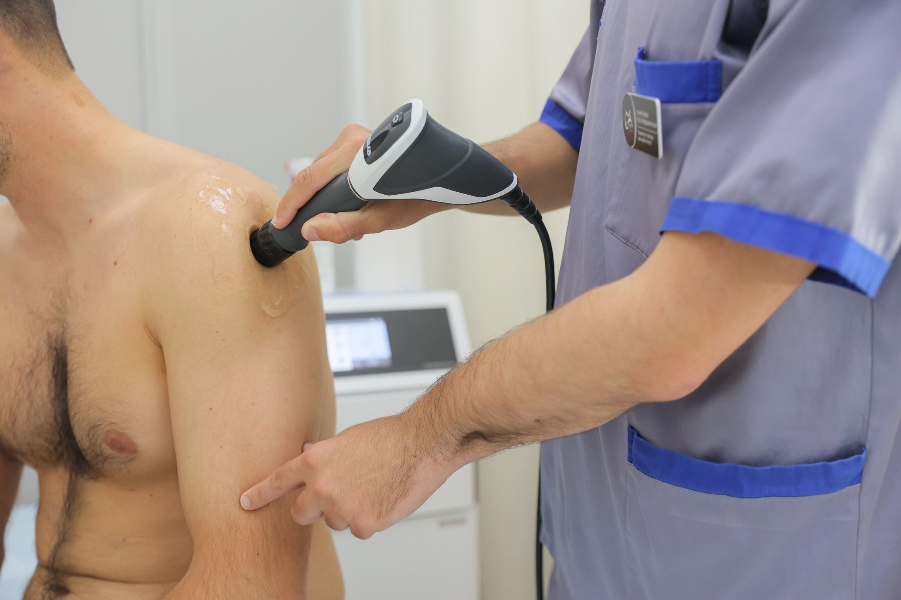
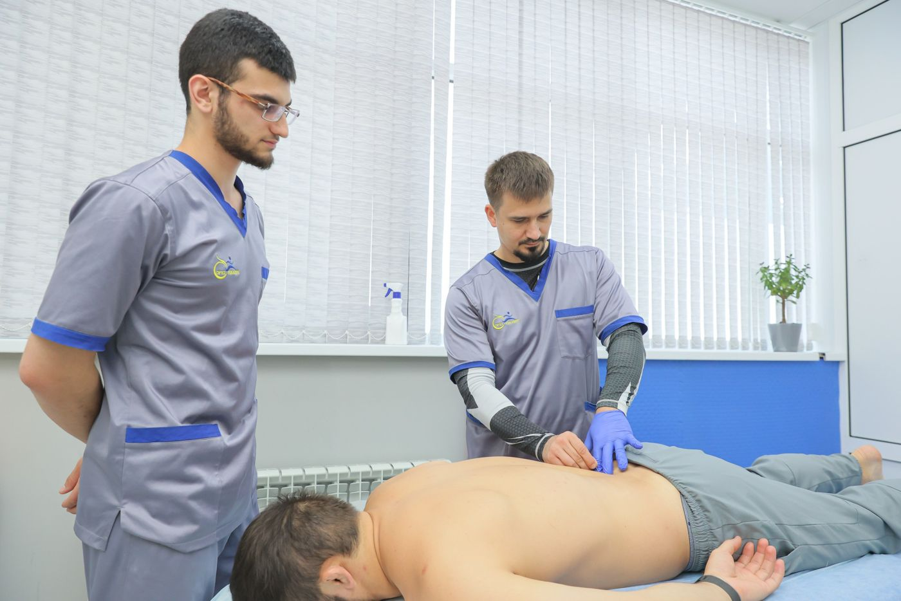
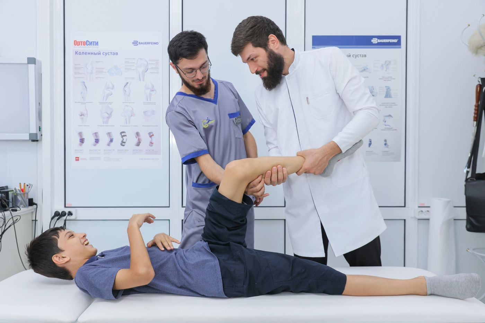
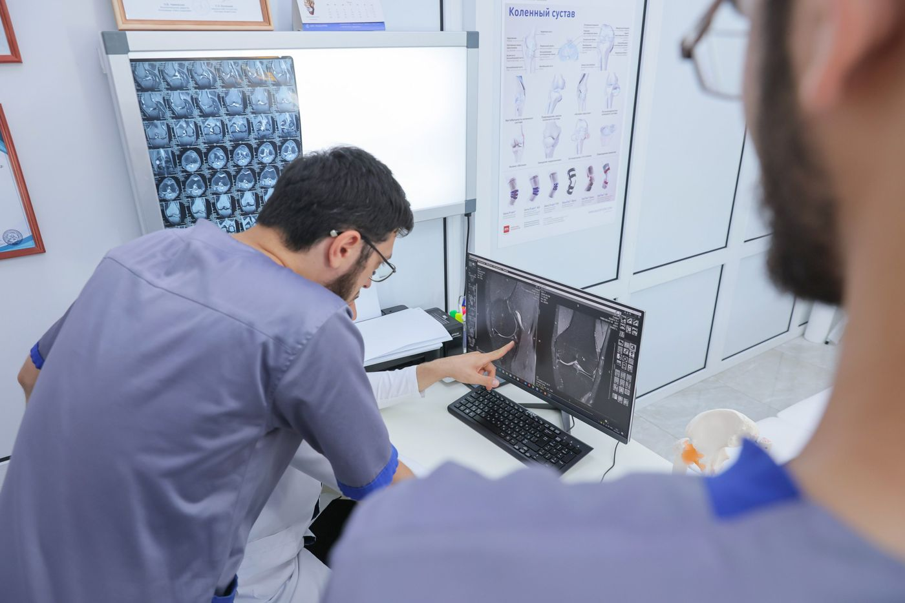
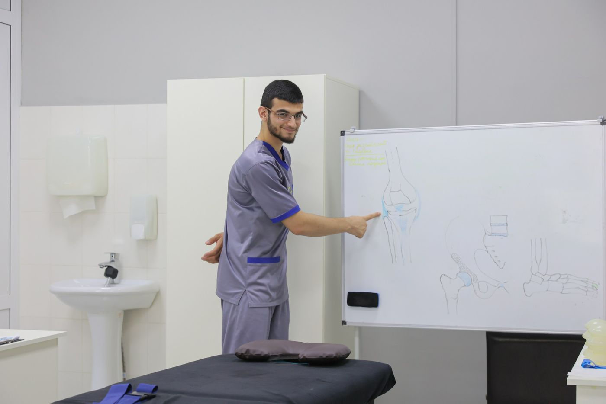

Возвращаемдвижениебез операции
Ортопеды, невролог и реабилитологи в Махачкале. Сначала находим причину боли, потом составляем план лечения — цену вы знаете до начала.

Махачкала, Имама Шамиля, 35АПриём ортопеда — 3 000 ₽Где болит?
Выберите, что беспокоит, — покажем, кто ведёт приём, что может назначить врач и сколько это стоит.

Тянет поясницу, отдаёт в ногу, затекает шея после работы, нашли грыжу или протрузию на МРТ.
- Полный приём невролога: консультация, разбор МРТ, процедуры8 000 ₽
- Ударно-волновая терапия3 000 ₽
- Лечебная физкультура, 60 минут2 500 ₽
- Массаж спины2 500 ₽

Не поднимается рука, болит локоть, кисть плохо разгибается после перелома или операции.
- Разработка кисти после операции3 000 ₽
- Ударно-волновая терапия3 000 ₽
- Кинезиотейпирование1 500 ₽
- Магнит высокой интенсивности с лазером2 000 ₽

Болит колено на лестнице, щёлкает, отекает после нагрузки, врач сказал «артроз».
- PRP-терапия10 500 ₽
- Плазмотерапия4 000 ₽
- Гиалуроновая кислота в сустав, процедура3 000 ₽
- Ударно-волновая терапия3 000 ₽

Утром больно наступить на пятку, плоскостопие, быстро устают ноги.
- Ударно-волновая терапия3 000 ₽
- Индивидуальные стельки Formthotics13 500 ₽
- Детские стельки Formthotics9 500 ₽

Сутулится, одно плечо выше, плоскостопие, нужны регулярные занятия при ДЦП.

- Гимнастика при сколиозе по методике СИАС2 500 ₽
- То же в группе2 000 ₽
- Занятие с ребёнком с ДЦП2 500 ₽
- Детский массажот 1 600 ₽

Нужно пройти гастроскопию или колоноскопию, но страшно. Под седацией вы просто спите.

- Гастроскопия под седацией6 000 ₽
- Колоноскопия под седацией10 000 ₽
- Оба обследования за один визит, под седацией14 000 ₽
- Гастроскопия без седации3 600 ₽
Сначала причина, потом лечение
Так проходит первый приём у ортопеда или невролога. Приём ортопеда длится 20–30 минут.
Расскажите, что беспокоит
Врач собирает жалобы и историю: когда началось, что усиливает боль, были ли травмы.
Осмотр и простой тест
Смотрим, как двигается сустав или спина, проводим несложный физический тест.
Разбор снимков
МРТ, рентген, заключения — объясняем простыми словами, что на них видно.
План лечения с ценой
Курс процедур и его стоимость вы знаете до начала. Решение за вами.


Врачи, к которым приходят по имени
Можно записаться к конкретному врачу. Если вам спокойнее со специалистом-женщиной, скажите об этом администратору.
Для двух пациентов с одинаковым диагнозом нельзя использовать одну программу: для одного она будет слишком лёгкой, для другого — невыполнимой. Поэтому план лечения мы составляем под вас.Принцип центра — со старого сайта «Орто-Рекавери»
Цены
Цену вы знаете до начала лечения. Курс можно оплатить частями, без переплаты.
Приём врача
- Травматолог-ортопед3 000 ₽
- Невролог, полный приём с процедурами8 000 ₽
- Реабилитолог2 000 ₽
- Реабилитолог на дому4 000 ₽
- Терапевт-гастроэнтеролог3 000 ₽
- Эндокринолог-нутрициолог4 000 ₽
- Психолог3 000 ₽
Суставы и физиотерапия
- PRP-терапия10 500 ₽
- Плазмотерапия4 000 ₽
- Гиалуроновая кислота в сустав3 000 ₽
- Блокада сустава или позвоночника3 000 ₽
- Ударно-волновая терапия3 000 ₽
- Магнит высокой интенсивности с лазером2 000 ₽
- Электромиостимуляция1 500 ₽
- Прессотерапия1 500 ₽
- Кинезиотейпирование1 500 ₽
- Магнитотерапия800 ₽
Как нас найти
- Адрес
- Махачкала, проспект Имама Шамиля, 35А, 1 этаж
- Как пройти
- Вход за шлагбаумом, рядом санаторий «Тарнаир». Остановка «Источник Тарнаир». Есть пандус и парковка.
- Часы работы
- Пн–Пт 9:00–18:00, Сб 9:00–16:00
- Телефон и WhatsApp
- +7 (8722) 52-23-33, +7 (988) 301-18-05